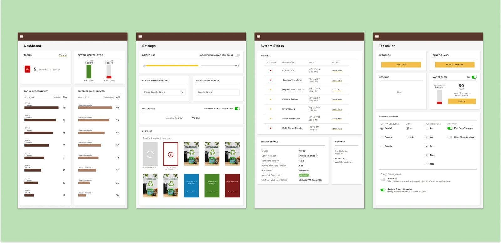
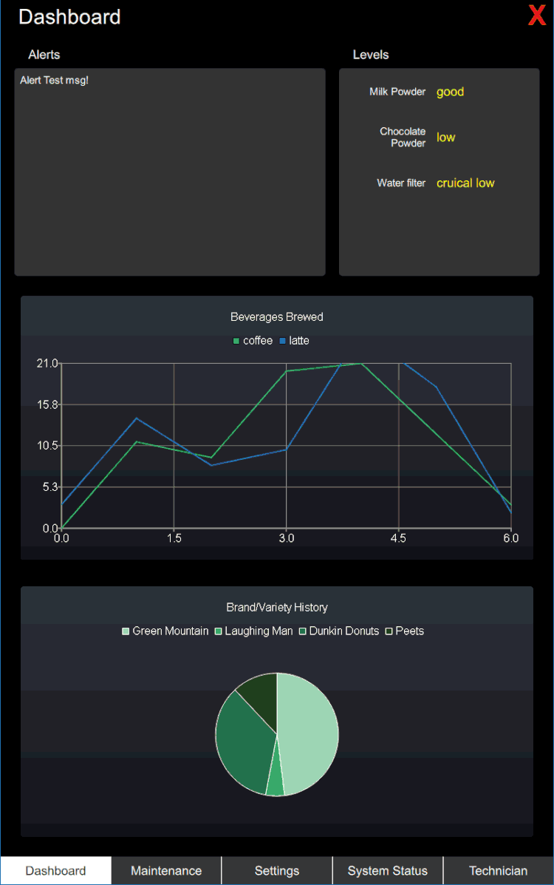
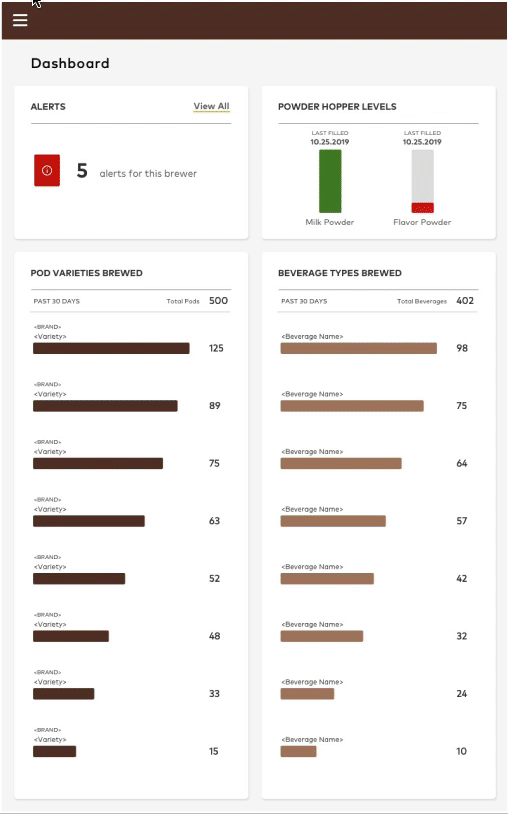
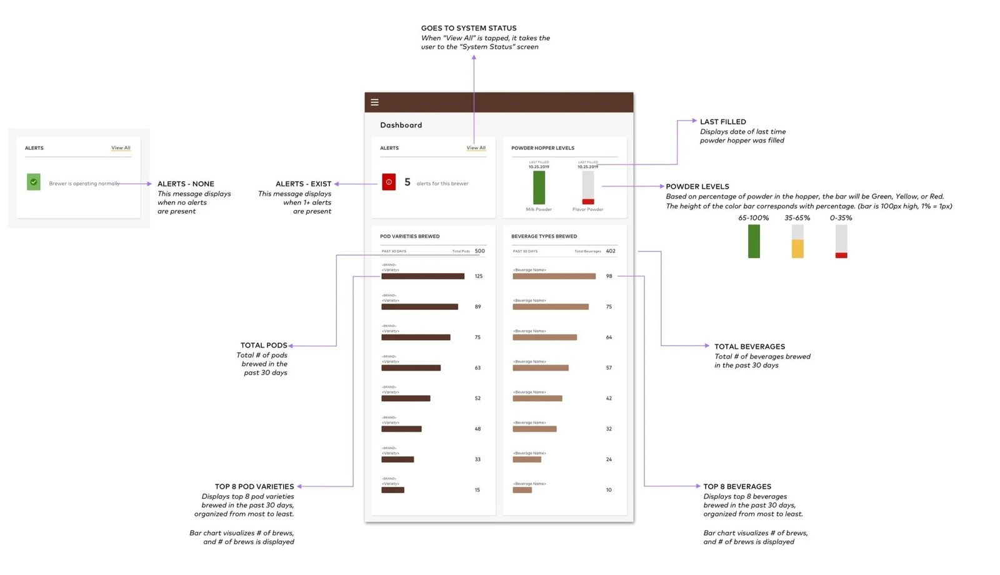
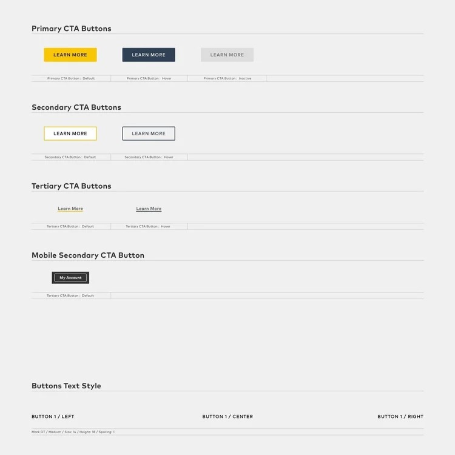
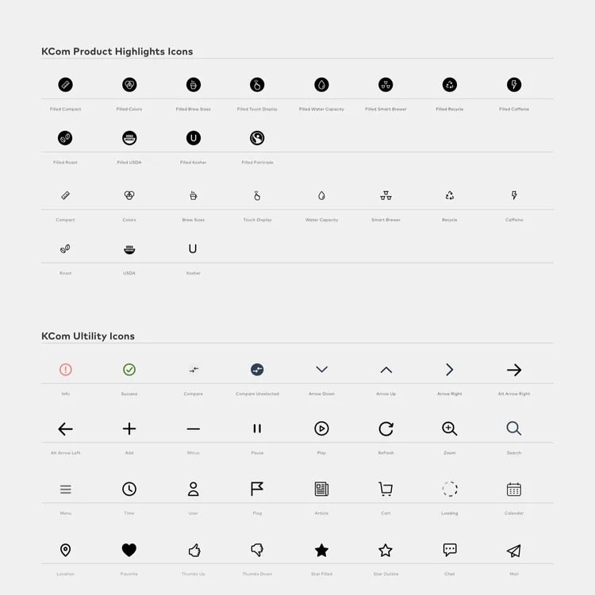
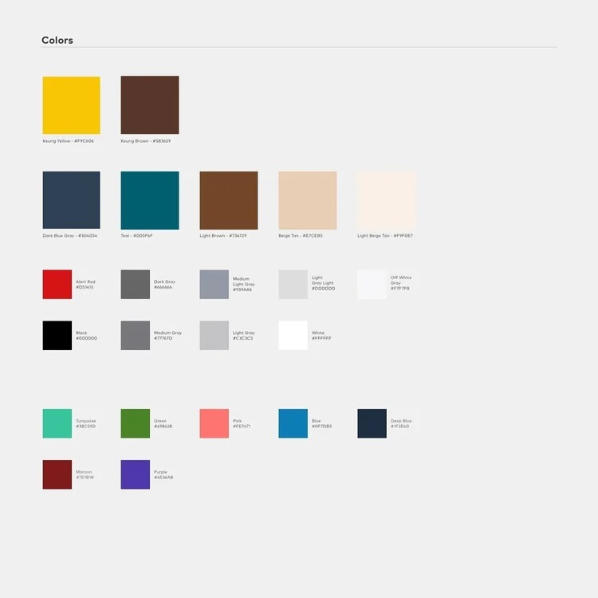
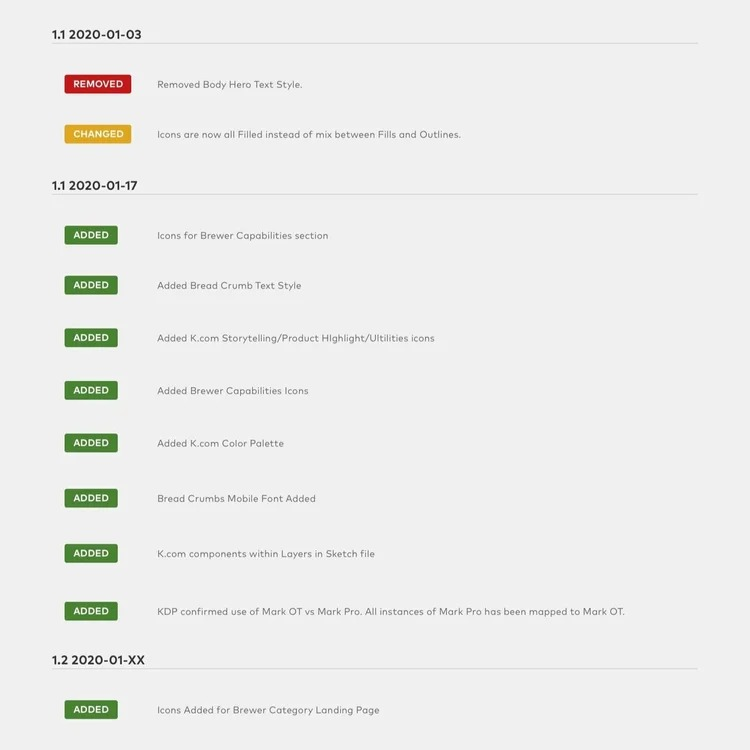
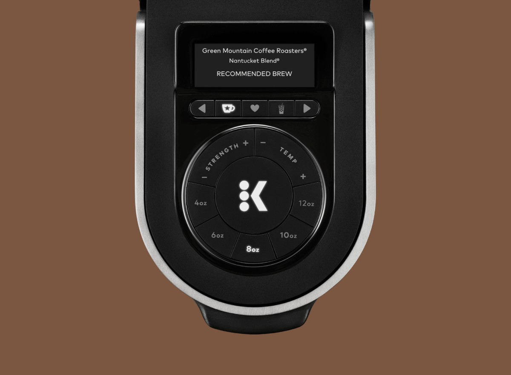
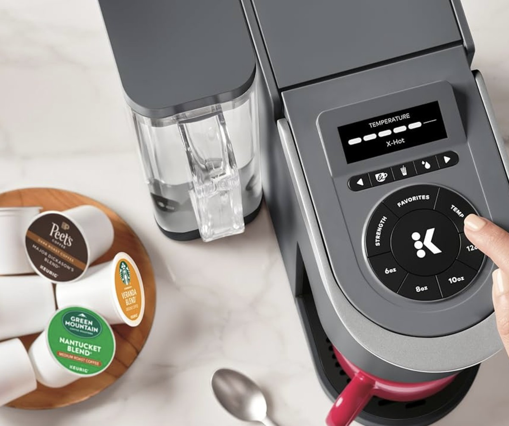

Using visualization to translate complex data for field technicians.

Commercial Keurig machines have a customer-facing screen, but, to many people’s surprise, they also have a backend UI that field technicians need to access to manage the devices, such as checking milk powder levels. It was my job as a designer to digest this complex UI and translate it into one that is technical yet intuitive.
Before design was brought in, the admin portal was built entirely by engineering: functional, but not usable. Raw data dumps, unstyled charts, and no visual hierarchy to help field technicians make sense of what they were looking at.

Before: engineering-built, no design involvement

After: final Dashboard design
The redesigned portal gave the same data real hierarchy: grouped cards, readable charts, and clear status indicators, so alerts, hopper levels, and brewer settings could be scanned at a glance instead of parsed line by line. Dashboard, Settings, System Status, and Technician each became their own focused view.
Admin mode is entry-gated behind a deliberate tap-and-hold gesture, so it doesn't surface accidentally during normal customer use.
A few of the specifics behind the Dashboard: alert states switch between a calm "operating normally" confirmation and a flagged count depending on whether anything needs attention. Powder hopper levels are color-coded by percentage (green, yellow, red) so a technician can tell status at a glance without reading numbers. Pod and beverage lists are capped to the top 8, ranked most to least, rather than dumping every variety on screen.

Alongside the admin portal, I contributed to Keurig's broader design system for KCom: button states, a documented icon library, a color palette with named tokens, and a versioned changelog tracking what was added, changed, or removed over time.




Alongside the admin portal, I also contributed to the physical brewer interface itself: the on-device display and dial controls used to select strength, temperature, and brew size.


More info to come soon.